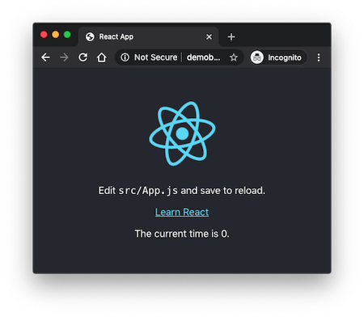
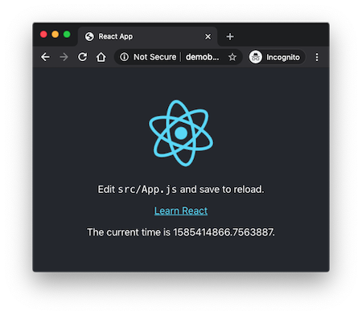

How to Deploy a React + Flask Project
Posted by
on underWelcome to the second part of my "React + Flask" series. In this episode we are going to deploy our project on a production server!
Have you missed the first part of this tutorial? You can find it here.
Namespacing API Routes
Before we begin looking at deployment options, I want to make a small change to the project as I left it in the first part of this series. As you recall, the Flask portion of the project was a little API with a single endpoint /time that returned the current Unix time.
When I started thinking about deployment I realized that it would be more convenient to have the API routes namespaced, so that they do not get mixed with any possible routes used by the React side. So I'm going to rename /time to /api/time. In the future, I'm going to implement any API routes with the same /api prefix, so that all the endpoints coming from the Python side are under the same root URL.
This change needs to be made in two places in the project. First, the api.py file needs to be updated:
@app.route('/api/time')
def get_current_time():
return {'time': time.time()}
The second change is in React's src/App.js file, where the Flask endpoint is invoked:
function App() {
const [currentTime, setCurrentTime] = useState(0);
useEffect(() => {
fetch('/api/time').then(res => res.json()).then(data => {
setCurrentTime(data.time);
});
}, []);
return (
// ...
}
}
Building the React Project
JavaScript projects that are intended for the browser have in general a build step that needs to be done before the application can be deployed to a production server. The purpose is to bundle all the source files and optimize their size so that they are served to clients as efficiently as possible.
For the React projects like this one, which were created with the create-react-app tool, a build can be triggered with the yarn build command:
$ yarn build
yarn run v1.21.1
$ react-scripts build
Creating an optimized production build...
Compiled successfully.
File sizes after gzip:
40.06 KB build/static/js/2.7f477b16.chunk.js
777 B build/static/js/runtime-main.228f8ff1.js
717 B build/static/js/main.bfcd0c95.chunk.js
556 B build/static/css/main.d1b05096.chunk.css
The project was built assuming it is hosted at the server root.
You can control this with the homepage field in your package.json.
For example, add this to build it for GitHub Pages:
"homepage" : "http://myname.github.io/myapp",
The build folder is ready to be deployed.
You may serve it with a static server:
yarn global add serve
serve -s build
Find out more about deployment here:
bit.ly/CRA-deploy
Done in 5.09s.
You can see that this is a fairly quick process. Once the build process completes the production-ready version of your application is left in the build directory:
build
├── asset-manifest.json
├── favicon.ico
├── index.html
├── logo192.png
├── logo512.png
├── manifest.json
├── precache-manifest.ca735824199eb87023efb8cdfb52df29.js
├── robots.txt
├── service-worker.js
└── static
├── css
│ ├── main.d1b05096.chunk.css
│ └── main.d1b05096.chunk.css.map
├── js
│ ├── 2.7f477b16.chunk.js
│ ├── 2.7f477b16.chunk.js.LICENSE.txt
│ ├── 2.7f477b16.chunk.js.map
│ ├── main.bfcd0c95.chunk.js
│ ├── main.bfcd0c95.chunk.js.map
│ ├── runtime-main.228f8ff1.js
│ └── runtime-main.228f8ff1.js.map
└── media
└── logo.5d5d9eef.svg
4 directories, 19 files
When deploying this application on a production server this build directory must be the web root, and the index.html file the main file from where the entire application is downloaded. Due to the large number of deployment platforms, it is impossible to cover every possible option. In this article I'm going to discuss two implementations.
Deploying on a Python Web Server
The first deployment method we are going to see is not a great solution in my opinion, but in many cases it is a very convenient one. We know we'll need to deploy the Flask API project, and we also know that Flask supports static files, so a logical implementation would be to set up the Flask project so that it serves the files that make up the React application in addition to the API endpoints.
To achieve this we need to point Flask's static folder to our build directory. This can be done with two options given when creating the Flask application instance:
static_foldertells Flask where is the static folder. By default this is a static directory located in the same directory where the application is. We can change it to point to build.static_url_pathtells Flask what is the URL prefix for all static files. By default this is /static. We can change it to the root URL, so that we do not need to prepend every static file with /static.
Here is how we can initialize the Flask application instance in the API project with these two arguments:
app = Flask(__name__, static_folder='../build', static_url_path='/')
The static_folder='../build' argument moves the static directory. Recall that the API project runs with the current directory set to the api, so to navigate to build we have to go up on level, and then down on build.
Without including the second argument, the React files would all be accessed with a /static URL prefix. So for example, you would use https://example.com/static/index.html to open the application. The static_url_path='/' argument removes the static file URL prefix, making the main URL https://example.com/index.html, which is more friendly.
You can rightly claim that having the explicitly give the index.html filename is unusual. Most production web servers provide a way to specify one or more default filenames for the server to return when the client asks for a URL that ends in a slash.
In Flask, we can emulate that functionality with a route:
@app.route('/')
def index():
return app.send_static_file('index.html')
With this route, when the client requests the https://example.com/ the server will send the contents of the index.html static file.
The Flask project now is able to serve both the React and Flask sides, so now all that is left is to deploy it like you would for a Flask only project. For example, you can use gunicorn or uWSGI.
I assume that if you are using this method you are either creating a quick test, or else you are deploying to a managed platform such as Heroku. If instead you use this method on a server that you manage and you intend to run your application robustly, you should make sure the Python web server executes as a service, and restarts in the event of a crash or the server being power cycled. I show in the next section how to do that using systemd.
Deploying on Nginx
If you intend to deploy your project to a production server that you fully control, then there is a much better option. If you followed my Flask Mega-Tutorial, you may remember the Linux deployment chapter. In this chapter I present a complete deployment that includes a Gunicorn server for the Python project, and nginx as a reverse proxy in front of it.
Initial Setup
Before you begin with the deployment tasks you should install your project on your server, and follow all the steps required to set up the project for development, as shown in the first part of this series. These steps include:
- Installing Node.js, yarn and Python
- Installing all the JavaScript dependencies for the project
- Creating a Python virtual environment and installing Python dependencies
Serving the React Application
Installing nginx is fairly simple, as it comes as a package in most Linux distributions. On Ubuntu, you can install it with apt-get:
$ sudo apt-get install nginx
After the installation completes, you can connect to your server with your web browser and you should see the nginx welcome page:

The sites that nginx serves are configured in the /etc/nginx/sites-available and /etc/nginx/sites-enabled directories. The "available" directory is a work area where you can define your sites, while the "enabled" directory has symlinks to files that are in the other directory that are currently active. This two-directory system allows you to have several configuration scripts defined, but not all of them enabled at the same time.
The default configuration that is created when you install nginx in Ubuntu includes one site, called default. A file with this name is created in the sites-available directory, and a symlink to it is added in sites-enabled. This is the configuration that creates the welcome page. We can start by deleting the symlink to remove this site:
$ sudo rm /etc/nginx/sites-enabled/default
Now let's create a configuration for the React project. Assuming you have your React application in the /home/ubuntu/react-flask-app directory, the following configuration for nginx serves its build directory:
server {
listen 80;
root /home/ubuntu/react-flask-app/build;
index index.html;
location / {
try_files $uri $uri/ =404;
}
}
This script has an important simplification. You can see that it is written to listen on port 80, which is the HTTP port used for content that is not encrypted. In today's world this is almost never a good idea, but I do not want to complicate this tutorial with the largely unrelated topic of implementing HTTP encryption. When you are ready to look at encryption you can check my other tutorial specific to that topic.
The root directive tells nginx the location of the root directory, from where all the static files will be served. This is pointing to the build subdirectory of our project.
The index directive is used to configure the default file that is returned when the client requests a URL that ends with a slash or doesn't have a path at all. The main file of our React project is index.html so that is what we need to use.
The location blocks are a core part of the nginx configuration, in which rules can be defined for different groups of URLs. In this first version of the configuration the only location is /, meaning it applies to all URLs. The try_files directive defined for this location indicates that nginx needs to serve the path given in the request URL as a file ($uri) for a first choice. If a file does not exist with the requested name, then it should try to serve it as a directory ($uri/). If neither of the two options work then it should return a 404 error, which is the "resource not found" error defined in the HTTP protocol.
You can write the above configuration script to /etc/nginx/sites-available/react-flask-app.nginx. Then enable it by creating a symlink to it:
$ sudo ln -s /etc/nginx/sites-available/react-flask-app.nginx /etc/nginx/sites-enabled/react-flask-app.nginx
Finally, tell nginx to reload its configuration to incorporate these changes:
$ sudo systemctl reload nginx
Now if you connect to your server from a web browser you will have the React application running. Since the Flask part of the project isn't running yet, the API call to obtain the current time will not work at this point.

Serving the Flask Application
The React side is now working, so let's look at the API. During development the Flask development web server was used, but this isn't a server that is robust enough for production use. What we want is a production-ready web server. For this tutorial I'm going to use Gunicorn, which needs to be installed in the virtual environment of our API project:
(venv) $ pip install gunicorn
The command to run our API project with Gunicorn is as follows:
$ gunicorn -b 127.0.0.1:5000 api:app
This tells Gunicorn to start the project on port 5000 of the internal network (127.0.0.1). We do not want to run this web server on the public network interface, since all accesses from the outside world are going to come through nginx. The api:app nomenclature is a common notation for WSGI applications, where the first part indicates the module or package where the application is defined, and the second part is the name of the variable in that module that holds it.
Since this application is going to run on a production server, we have to make sure it is always running, so starting the application from the command-line is not really sufficient. For example, if the server is power cycled we want it to start automatically when the server is back up, in the same way nginx does.
Unix has several process monitoring systems that are dedicated to the purpose of keeping services running. In most modern Linux distributions, systemd is used for this purpose. If you want to learn the details of how to set up a Flask application under systemd, see this other article. The solution consists in adding a service file in the /etc/systemd/system directory, with all the information that systemd needs to run the Flask application. Below you can see the service file I created for the Flask API project in this article:
[Unit]
Description=A simple Flask API
After=network.target
[Service]
User=ubuntu
WorkingDirectory=/home/ubuntu/react-flask-app/api
ExecStart=/home/ubuntu/react-flask-app/api/venv/bin/gunicorn -b 127.0.0.1:5000 api:app
Restart=always
[Install]
WantedBy=multi-user.target
Copy the above configuration file to /etc/systemd/system/flask-react-app.service (you will need to use sudo), and then tell systemd to reload:
$ sudo systemctl daemon-reload
Assuming there were no errors during the reload, you can now tell systemd to start the Flask application as a service:
$ sudo systemctl start react-flask-app
If you want to verify that the service is now running, you can use the status command:
$ sudo systemctl status react-flask-app
● react-flask-app.service - <a description of your application>
Loaded: loaded (/etc/systemd/system/react-flask-app.service; disabled; vendor preset: enabled)
Active: active (running) since Sat 2020-03-28 16:54:09 UTC; 17h ago
Main PID: 10449 (gunicorn)
Tasks: 2 (limit: 1152)
CGroup: /system.slice/react-flask-app.service
├─10449 /home/ubuntu/react-flask-app/api/venv/bin/python3 /home/ubuntu/react-flask-app/api/venv/bin/gunicorn -b 127.0.0.1:5000 api:app
└─10493 /home/ubuntu/react-flask-app/api/venv/bin/python3 /home/ubuntu/react-flask-app/api/venv/bin/gunicorn -b 127.0.0.1:5000 api:app
Mar 28 16:54:09 demobox systemd[1]: Started <a description of your application>.
Mar 28 16:54:10 demobox gunicorn[10449]: [2020-03-28 16:54:10 +0000] [10449] [INFO] Starting gunicorn 20.0.4
Mar 28 16:54:10 demobox gunicorn[10449]: [2020-03-28 16:54:10 +0000] [10449] [INFO] Listening at: http://127.0.0.1:5000 (10449)
Mar 28 16:54:10 demobox gunicorn[10449]: [2020-03-28 16:54:10 +0000] [10449] [INFO] Using worker: sync
Mar 28 16:54:10 demobox gunicorn[10449]: [2020-03-28 16:54:10 +0000] [10493] [INFO] Booting worker with pid: 10493
The main part of this output is the active (running) status, which indicates that the service started. At this point systemd is actively monitoring this process, and any time it finds the process isn't running it will start a new copy, including in the case of the server being rebooted.
The part that remains is to tell nginx to act as a reverse-proxy for the API service. This can be done with a second location block that is specific to all URLs that begin with /api:
server {
listen 80;
root /home/ubuntu/react-flask-app/build;
index index.html;
location / {
try_files $uri $uri/ =404;
}
location /api {
include proxy_params;
proxy_pass http://localhost:5000;
}
}
The proxy_params included file has common definitions that are used when nginx acts as a reverse proxy. The proxy_pass command gives the address where the proxied service is listening for requests.
Now you can reload nginx one more time:
$ sudo systemctl reload nginx
And now when you refresh the page on your web browser you should see that the API call to get the time is working:

Caching Configuration
A detail that is often ignored or glossed over is how to properly configure caching. The files created by React's build tend to be somewhat large, so it is a good idea to have proper caching directives set in place so that clients do not have to download the application every time they connect to the server.
The create-react-app project has a documentation section on caching, in which they suggest to give a caching time of one year to all the builds in build/static, and to disable caching for all other files, so let's implement this in the nginx configuration:
server {
listen 80;
root /home/ubuntu/react-flask-app/build;
index index.html;
location / {
try_files $uri $uri/ =404;
add_header Cache-Control "no-cache";
}
location /static {
expires 1y;
add_header Cache-Control "public";
}
location /api {
include proxy_params;
proxy_pass http://localhost:5000;
}
}
The first change is the addition of add_header Cache-Control "no-cache" in the main location block. This effectively turns caching off for all the static files in the React project.
To provide different caching instructions for the files in build/static (which are those with URLs starting with /static), a new location block for /static is added. In this block the expiration is set to one year, and the cache is set to public, which indicates that any cache is free to store a copy of this file for the indicated period of time.
Reload nginx one last time:
$ sudo systemctl reload nginx
And now the project is fully configured!
Remaining Work
To complete a production deployment on a Linux server there are a few more tasks that you should consider that are out of scope for this article but are extremely important.
I hinted at this earlier, your server will more than likely need to be configured with encryption and an SSL certificate to meet the security standards your users will expect. A fairly common nginx set up is to configure your site on port 443 with encryption, and then configure a secondary server on port 80 that just redirects all requests coming on http:// to the same URL on https://.
You should also consider adding a firewall to your server such as the Uncomplicated Firewall or ufw. This will help you control which ports are open to external connections on your server. For the example server in this article I would just open ports 22 (SSH), 80 (HTTP) and 443 (HTTPS). Any other ports should be closed to the outside, even if you are running processes on the server that listen on those ports.
While these two are the most important, there are a number of smaller tasks related to the security of your server that you should also take care of. The Linux deployment chapter of my Flask Mega-Tutorial is a good guide to follow on securing your server.
Conclusion
I hope this was a helpful tutorial and now you are on your way to deploying your React + Flask project.
Do you have any other questions regarding this project? Let me know below in the comments!
Become a Patron!
Hello, and thank you for visiting my blog! If you enjoyed this article, please consider supporting my work on this blog on Patreon!

-
#76 Benjamin said
hi Miguel,
thank you for sharing these tutorials. I got the first part of the tutorial to work, and now I am keen to tackle the deployment part.
What I want to learn is how I can create a single docker image that contains both backend & frontend (similar to applications that I would download from docker hub, for example; I would not download a backend image and a frontend image separately).
Few questions:
1) I see that in your git repo you prepared already Dockerfiles; does the "Dockerfile.combo" do what I want to do (e.g. combine the frontend and the backend into a singular container)?2) I read the above tutorial and watched your recording, but I didnt see that you covered the docker images; are those explained in a different blog post?
3) Lastly, your git repo has the file "react-flask-app.nginx", but I don't see it being used; I only see "nginx.default.conf" being used in "Dockerfile.client". Is that former file no longer needed?
Thank you so much for your time you are putting into this; the tutorials are awesome, and for someone like me who is doing the first baby steps with webdevelopment an incredible help!
-
#77 Miguel Grinberg said
@Benjamin: see the last article in the series for Docker deployment details.